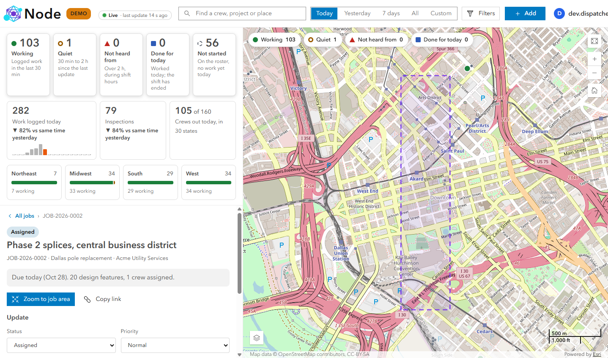
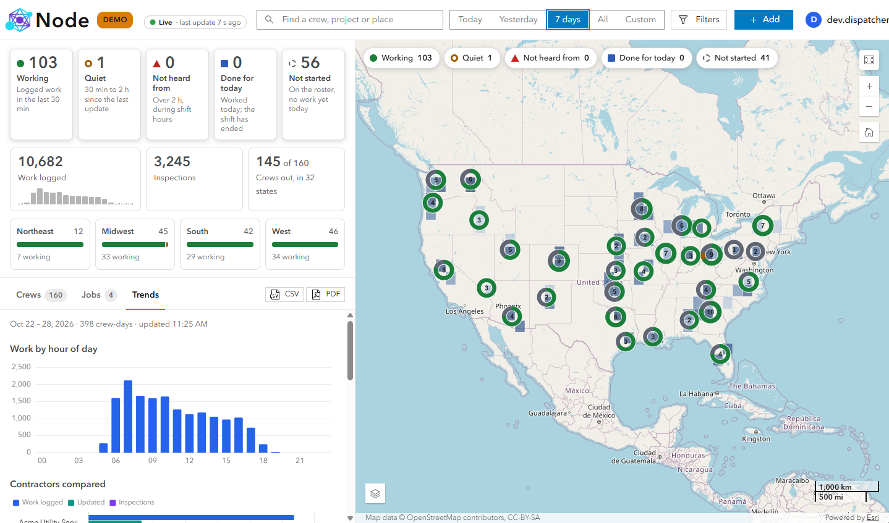
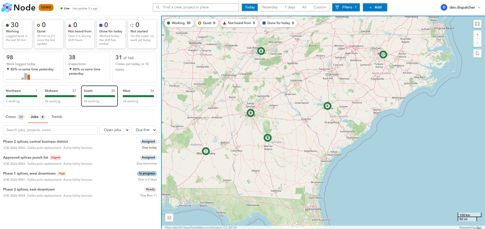

Case study · Field ops · Dispatch
In productionNode: Field Crew Tracking
A live view of every contractor and crew, built from the Field Maps data they already submit, with no new app for the field.
Internal application · shown through screenshots, capabilities and metrics only

// The problem
The data existed. The view did not.
Multi-state utility and telecom programs hire several contractors, each running dozens of crews. Crews already record installs, repairs, inspections and surveys in Esri Field Maps, so the data sits in ArcGIS Enterprise. Even so, a dispatcher who wants to know who is working, who has gone quiet, or how much a contractor finished in one state this week still has to phone around and merge spreadsheets.
// Engineering challenges
No shared schema
Each contractor's layer names its crew, project, activity and time fields differently.
Read-only access
Node never writes to the layers crews edit. It can only poll them for changes.
What counts as today
Time zones, shift hours and late offline syncs decide each crew's working day and status.
Group permissions
Crews see only maps shared with their ArcGIS groups, checked when a job is planned and again when it's created.
// Architecture
Field Maps (tablets) ──► ArcGIS Enterprise hosted feature layers
│ read-only, polled every 15 s (changed records only)
▼
Node service (Fastify, TypeScript)
field mapping per layer · crew attribution by username
working-day + time-zone resolution · status engine (30 s)
data-quality flags · job planner (group-sharing checks)
crew notifications · Katapult Pro adapter
│
▼
PostgreSQL: activity (partitioned) · crew-day metrics
· jobs · retention policies
│ REST API
▼
React + ArcGIS Maps SDK: summary · live map · crews · trends · jobs
Excel / PDF export · shareable view links · responsive layout
// Capabilities
- Contractor and crew tracking. Compare contractors, then drill into one crew's day: timeline, route and output.
- Layer onboarding. Node suggests which fields hold crew, contractor, project, activity and time, and asks only about matches it is unsure of.
- Live status. Working, Quiet, Not heard from, Done for the day, or Not started, from each crew's last report and shift hours.
- Crew notifications. Dispatchers message crews in the field to catch issues early or coordinate changes.
- Job planning. Bind a project to a web map and design layer, pick design features by attribute, and re-validate before the job is created.
- Reports. Statistics update live on screen; Excel and PDF exports on demand for management.
- Storage and data quality. Partitioned activity, precomputed daily metrics, tiered retention, and suspect records flagged without being blocked.
// Screenshots



// Measured impact